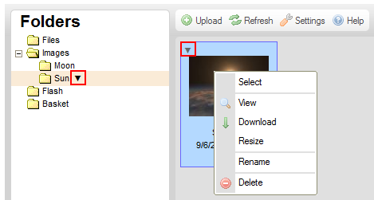

Menu kontekstowe jest menu wyskakującym, które pojawia się za każdym razem, gdy klikniesz plik lub folder wewnątrz interfejsu CKFindera za pomocą prawego przycisku myszy, użyjesz klawisza Menu/Application na klawiaturze lub skorzystasz ze skrótu klawiaturowego (Ctrl+)Shift+F10. Menu to daje dostęp do poleceń menedżera plików dostępnych dla określonego typu obiektu.
Menu kontekstowe można również otworzyć, klikając ikonę strzałki () dostępną w niektórych środowiskach lub w przeglądarkach mobilnych obok nazwy aktywnego folderu lub wewnątrz ramki pliku, jak na rysunku poniżej.

Każde menu kontekstowe składa się ze zbioru opcji (poleceń), które można wybrać w celu wykonania operacji z nimi powiązanych.
Uwaga: Niektóre opcje menu kontekstowego mogą być wyłączone (i tym samym wyszarzone) w zależności od konfiguracji CKFindera ustawionej przez administratora systemu.
W celu wykonania operacji wymienionej w menu kontekstowym należy kliknąć określoną opcję za pomocą lewego przycisku myszy. Można również przechodzić w dół i w górę menu kontekstowego za pomocą przycisków strzałek na klawiaturze lub klawiszy Shift+Tab oraz Tab. Po podświetleniu opcji można ją aktywować za pomocą klawiszy spacji lub Enter. Jeśli opcja jest wyszarzona, oznacza to, że pozostaje niedostępna, dopóki nie zostaną spełnione określone warunki (na przykład masz uprawnienia do wykonania określonych zmian w pliku lub folderze).
Menu CKFindera są, jak sama nazwa wskazuje, kontekstowe, co oznacza, iż opcje w nich dostępne uzależnione są od wybranego obiektu. Poniżej przedstawiono menu kontekstowe, z którymi można się spotkać, pracując w standardowej instalacji CKFindera.
Pojawia się, gdy klikniesz folder w panelu folderów CKFindera za pomocą prawego przycisku myszy (lub użyjesz skrótów klawiaturowych opisanych powyżej):
Pojawia się, gdy klikniesz plik w panelu plików CKFindera za pomocą prawego przycisku myszy (lub użyjesz skrótów klawiaturowych opisanych powyżej):